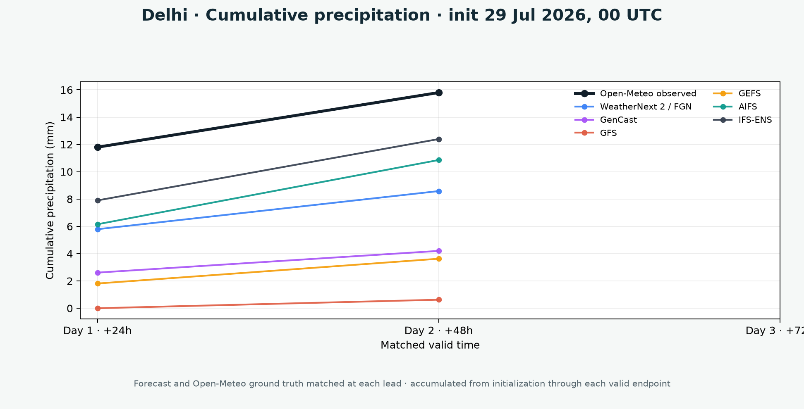

Align
Only shared 00 UTC initializations are admitted. Fields use the same India-region box, endpoints, and units.
India-region forecast research · rolling seven-initialization archive
An experimental AI ensemble research system. AdaWeather examines a transparent, online-learned mixture of global forecast experts alongside the individual source models. Products are harmonized for research comparison, not operational decision-making.
Interactive archive explorer
Canvas-rendered model fields replace the image gallery. Drag to pan, use the wheel to zoom, and select a city marker to open matched evidence. Coordinates and marker placement use the published India-region bounding box.
Interactive archive explorer
Canvas-rendered model fields replace the image gallery. Drag to pan, use the wheel to zoom, and select a city marker to open matched evidence. Coordinates and marker placement use the published India-region bounding box.
Experimental online combination
For each city, AdaWeather applies a causal online learner to recent matched 2 m-temperature forecasts. The line is the convex blend; the envelope is the contributing model range—not a calibrated prediction interval.
Experimental online convex combination of city-level source-model forecasts. Weights are learned causally from the most recent 10-day matched history; the shaded range is the spread of contributing source-model forecasts.
Realized forecast validation
Each point pairs a published source-model forecast with Open-Meteo ground truth at the same city and valid time. Precipitation is accumulated over the identical initialization-to-endpoint window.

Matched trajectory

AdaWeather method
AdaWeather is an experimental mixture-of-experts study, not a claim of superior operational skill. It evaluates a convex, online-learned combination of available global-model experts against recent observations, while retaining every individual expert for comparison.
Only shared 00 UTC initializations are admitted. Fields use the same India-region box, endpoints, and units.
Daily high and low layers are maxima and minima of every available native 2 m-temperature step in each 24-hour forecast day.
The AdaWeather research combiner learns non-negative expert weights from recent matched history; weights sum to one.
Published city samples are matched to Open-Meteo ground truth. Missing source data rejects a run rather than silently substituting one.
Data provenance
WeatherNext products are read from private GCS Zarr archives. NOAA and ECMWF products are read from dynamical.org’s analysis-ready Icechunk archives.
| Model | Archive | Map reduction | Documentation |
|---|---|---|---|
| WeatherNext 2 / FGN | Google WeatherNext | 8 / 64 members | Source details |
| GenCast | Google WeatherNext | 8 / 64 members | Source details |
| GFS | dynamical.org / NOAA | Deterministic | Source details |
| GEFS | dynamical.org / NOAA | 31 / 31 members | Source details |
| AIFS | dynamical.org / ECMWF | Deterministic | Source details |
| IFS-ENS | dynamical.org / ECMWF | 51 / 51 members | Source details |
Learning resources
Selected open educational references for readers who want to connect forecast products with the underlying physical and chemical atmosphere.